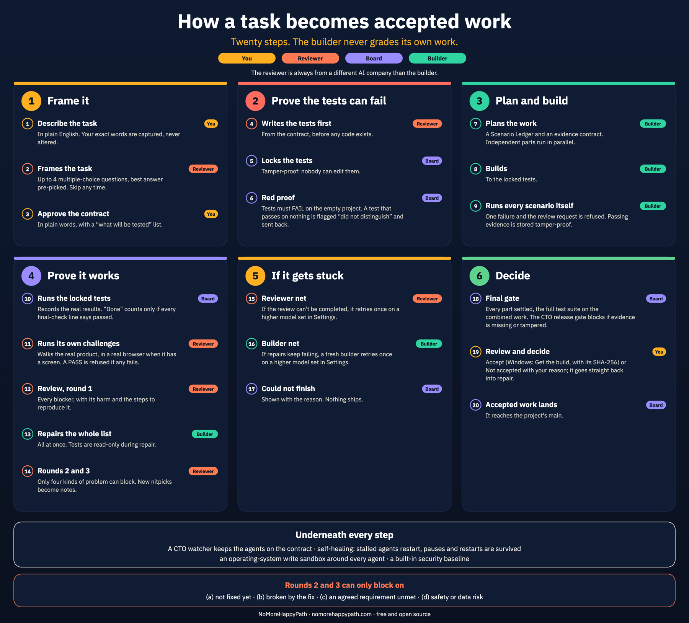
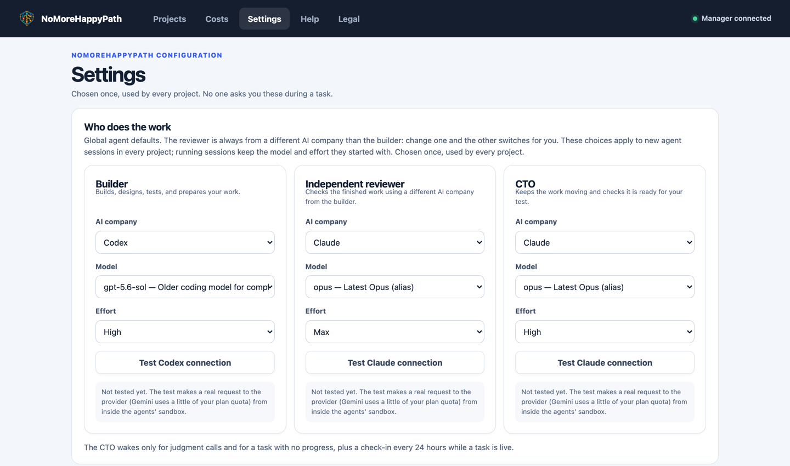
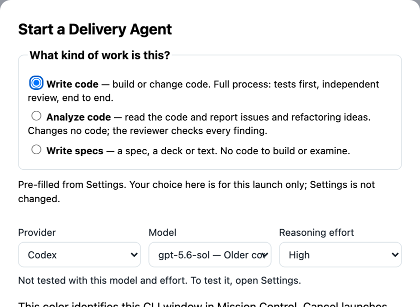

Be a software company of one.
Make ‘done’ mean done.
NoMoreHappyPath is an open-source delivery system for building commercial software with AI agents. A builder, an independent reviewer from a different AI company and a CTO take your idea through 21 quality steps, in a control room that speaks plain English. Nothing is done until you accept it.
Free and open source (Apache 2.0) · macOS and Linux · runs on your machine, with your own AI accounts
Claude built Acremuse, a live commercial app. NoMoreHappyPath reviewed its code: 33 real problems found, against 10 by one AI alone. Narration by AI.
Built by someone who has shipped commercial software for 35 years. About the builder →
Same job, same 374,000-line app. 33 real problems against 10.
Claude built Acremuse, a live commercial app, with Codex reviewing. It was not built with NoMoreHappyPath. The owner then gave one job to a single Claude session and to NoMoreHappyPath: find what could stop it being used commercially. A judge from a different company, blind to which was which, checked every claim against the original code.
One codebase, one run each, two judging runs. A case study, not a benchmark.
Most AI says “done” in one step. This takes 21.
Spec it
You approve a plain-words contract. A reviewer from another AI company writes the tests first, and each one must fail before it counts.
Build it
The builder codes to the locked tests and runs every scenario itself. One failure and the review request is refused.
Challenge it
The reviewer runs the real product, blockers go back for repair, and you accept the work or send it back.
In plain English. Your exact words are captured, never altered.
Up to 4 multiple-choice questions, best answer pre-picked. Skip any time.
In plain words, with a “what will be tested” list.
From the contract, before any code exists.
Each test is labelled with the requirement(s) it covers; each requirement lists the failure cases it tries. A requirement shows “covered” or “gap”; a gap goes back once, and you are never held.
Stored with a fingerprint (SHA-256). Any change is recorded.
Run on the project as it was before the work began. A test that passes there is flagged “did not distinguish” and does not count.
A Scenario Ledger and an evidence contract. Independent parts run in parallel.
To the locked tests.
One failure and the review request is refused. Passing evidence is stored tamper-proof.
Records the real results. “Done” counts only if every final-check line says passed.
Walks the real product, in a real browser when it has a screen. A PASS is refused if any fails.
Every blocker, with its harm and the steps to reproduce it.
All at once. Tests are read-only during repair.
Only four kinds of problem can block. New nitpicks become notes.
If the review can't be completed, it retries once on a higher model set in Settings.
If repairs keep failing, a fresh builder retries once on a higher model set in Settings.
Shown with the reason. Nothing ships.
Every part settled, the full test suite on the combined work. The CTO release gate blocks if evidence is missing or tampered.
Accept (Windows: Get the build, with its SHA-256) or Not accepted with your reason; it goes straight back into repair.
It reaches the project's main.
See all 21 steps on one page

- 1. Frame it
- YouDescribe the taskIn plain English. Your exact words are captured, never altered.
- ReviewerFrames the taskUp to 4 multiple-choice questions, best answer pre-picked. Skip any time.
- YouApprove the contractIn plain words, with a “what will be tested” list.
- 2. Prove the tests are real
- ReviewerWrites the tests firstFrom the contract, before any code exists.
- ReviewerCoverage checkEach test is labelled with the requirement(s) it covers; each requirement lists the failure cases it tries. A requirement shows “covered” or “gap”; a gap goes back once, and you are never held.
- BoardLocks the testsStored with a fingerprint (SHA-256). Any change is recorded.
- BoardRed proofRun on the project as it was before the work began. A test that passes there is flagged “did not distinguish” and does not count.
- 3. Plan and build
- BuilderPlans the workA Scenario Ledger and an evidence contract. Independent parts run in parallel.
- BuilderBuildsTo the locked tests.
- BuilderRuns every scenario itselfOne failure and the review request is refused. Passing evidence is stored tamper-proof.
- 4. Prove it works
- BoardRuns the locked testsRecords the real results. “Done” counts only if every final-check line says passed.
- ReviewerRuns its own challengesWalks the real product, in a real browser when it has a screen. A PASS is refused if any fails.
- ReviewerReview, round 1Every blocker, with its harm and the steps to reproduce it.
- BuilderRepairs the whole listAll at once. Tests are read-only during repair.
- ReviewerRounds 2 and 3Only four kinds of problem can block. New nitpicks become notes.
- 5. If it gets stuck
- ReviewerReviewer netIf the review can't be completed, it retries once on a higher model set in Settings.
- BuilderBuilder netIf repairs keep failing, a fresh builder retries once on a higher model set in Settings.
- BoardCould not finishShown with the reason. Nothing ships.
- 6. Decide
- BoardFinal gateEvery part settled, the full test suite on the combined work. The CTO release gate blocks if evidence is missing or tampered.
- YouReview and decideAccept (Windows: Get the build, with its SHA-256) or Not accepted with your reason; it goes straight back into repair.
- BoardAccepted work landsIt reaches the project's main.
Everything a software company needs, on your machine
Underneath it all: a board the agents can’t edit, an operating-system sandbox around every agent, and self-healing when an agent stalls.
Mission Control
A friendly interface to talk to the agents and see where each task is, step by step, explained in plain English.
A CTO that clears the path
It doesn’t only monitor: it clears the way for the builder and the reviewer so nothing stays stuck, and never asks you a technical question.
The right model, within your quota
Claude, Codex or Gemini in any role. Specs on higher models, code on lower ones, an automatic switch to a higher model when needed, and a check on your quota.
Test where it will run
Define virtual machines of different operating systems as test targets. A Windows program is built and tested on a real Windows machine, from your Mac.
Ask, look back, pause
Ask questions about your project, look at its full history, and pause and restart without losing anything.
Security, enhanced on demand
Every app gets a built-in security baseline. Switch on Enhanced security for a task and it adds a threat model, security tests and a controls register, ready for a security assessment or audit.


Real products, built with it
PropDesk at work
PropDesk, built with NoMoreHappyPath: parcel, utilities, flood, zoning, traffic and more in one workspace. Narration by AI.
Studio, a marketing agency
How a complete marketing agency was built with NoMoreHappyPath, and what it does. Narration by AI.
Not for the five-minute demo.
Built for solo founders, senior engineers and domain experts who ship commercial software. The wrong tool for:
- a hackathon project that must run by Sunday
- a hobby app where being wrong costs nothing
- a build you will not pay for: a serious build runs on your own AI plans
What you need, and two commands
The platform is free. The AI agents it runs are not: they use your own accounts, and a serious build costs real money on them.
| You need | Why | Cost |
|---|---|---|
| macOS 13+ or Linux | Tested on Ubuntu 24.04. Python 3.9+. To run it, Windows isn’t supported (it can still build and test Windows programs). | Free |
| Two AI companies’ CLIs | Any two of Codex, Claude Code and Gemini (Antigravity CLI), so the reviewer is never the builder’s vendor. | Your own plans |
| OpenAI API key | Your own key, only for asking questions about your project. | Pay per use |
git clone https://github.com/nomorehappypath/nomorehappypath.git cd nomorehappypath && bash install.sh
The installer checks everything above and tells you plainly what’s missing. Then open Mission Control, point it at a project folder, and give your first direction.
Built by someone who has shipped commercial software for 35 years
I’m Gerard Rafie. For more than 35 years I led product management, marketing and sales in fintech: I conceived, built, marketed and sold technology solutions for banks, and I advise banks and private equity firms on treasury, capital markets and AI.
I built NoMoreHappyPath because AI kept telling me “done” when it wasn’t. I use it for my own products, and so do my clients.
What people ask first
How is this different from other open-source AI dev harnesses?
Many harnesses help you run agents, and leave the quality process for you to design. NoMoreHappyPath ships the whole route by default, and it's built for a solo builder who wants to ship commercial software, not demos:
- Agreed before built. The reviewer asks you up to four multiple-choice questions, and you approve a plain-words contract before any code exists.
- Tests that are real. A reviewer from a different AI company writes the tests first; a coverage check makes sure every requirement has one; every test must fail before the work, or it doesn't count.
- A board no agent can edit. The board runs the tests itself and records the real results, so a pass can't be faked.
- Reviews that end. Three bounded rounds, then a retry on a higher model, or an honest “could not finish”. Never an endless loop.
- A control room you can understand. Mission Control shows every step in plain English, and a CTO clears the path so nothing stays stuck.
- Built for real targets. Test on virtual machines of different operating systems, pick the model for each role within your quota, and pause or restart without losing anything.
- Security built in, and enhanced on demand. A security baseline on every app, and an Enhanced security switch per task that adds a threat model, security tests and a controls register.
- You decide. Nothing is done until you review and accept it.
- Proven on real products. A land due-diligence platform, a pre-purchase analysis app and a marketing agency, each used by a client.
Isn’t AI reviewing AI just theatre?
The reviewer isn’t reading a diff and nodding. It writes its own tests, the harness runs them and keeps the output, and the verdict has to match that output. A pass with no recorded execution behind it is refused. It also has no reason to agree: it comes from a different company than the builder.
What does it cost to run?
The software is free. The agents run on your own subscriptions. A serious build uses real usage. Using a top model for the plan and lighter models for building and review keeps that down.
Why does even a small app take so long?
Because the harness builds for release, not for a demo. It agrees the requirements first, has a different AI review each part, tries the failure cases, checks security and quality basics, and finishes with a review that uses the whole app in a real browser. A weather app took 48 minutes and four reviews, and one of them failed. A demo takes five minutes and skips all of that.
Does my code leave my computer?
The harness runs on your machine and doesn’t send your code to us. Your agents talk to their own providers, the same as when you use those tools directly.
Does it guarantee bug-free software?
No, and nothing does. What it guarantees is that nothing ships unchecked: the tests are written before the code and must fail first, the board runs them itself, an independent reviewer from a different AI company runs its own tests on the real product, a final gate runs the full test suite, and you review and accept the result before it ships. Every check leaves evidence you can read.